저는 빠르게 9의 결과물을 만들어내는 개발자 정수현입니다.
실제 프로덕트를 개발해 배포하고 운영하며 정한 일정에 맞춰 작업하는 것이 중요하고 또한 여러 외부 요인들에 의해 지연될 수 있다는 점을 알게되었습니다.
그래서 정해진 일정에 맞춰 빠르게 결과물을 만들어 내고 외부 요인들에 의해 휘둘리지 않도록 항상 여유 기간을 만들어 내는 개발자가 되려고 합니다.
Contact
- phone: 010-9495-5937
- email : windseed71@gmail.com
- GitHub: https://github.com/suhyun444
이력
- 한국 애니메이션 고등학교 컴퓨터게임제작과 졸업 (2020.03 ~ 2023.01)
- 공군 작전정보통신단 유선반 병장 만기전역(2024.03 ~ 2025.12)
- 국민대학교 소프트웨어학부 2학년 재학
(2023.03 ~ ) GPA(전체 4.2 / 전공 4.42) - 소프트웨어 마에스트로 서울 17기 활동
(2026.04 ~ )
업무경험
- 특성화 고등학교 알고리즘 방과후 강사 (2023.03 ~ 2023.12)
- 프로그래밍 과외 (2023.03~2023.07)
수상경력
- 제 39회 한국정보올림피아드 1차 대회 고등부 전체 응시자부문 장려상 | 한국정보과학회(2022/06/10)
- 제 7회 국민대학교 알고리즘 대회 장려상 | 국민대학교(2022/08/20)
자격증
- 프로그래밍기능사 (2023.09.20)
- SQLD (2025.04.04)
테크스택
Backend
Java, Spring boot, MySQL, Redis
Game · Client
Unity, C++, C#
Infra · Tools
AWS, Docker, Nginx, Claude Code, Codex
AI 활용 역량
AI로 빠르게 구현하되, 계획과 코드는 여러 에이전트의 리뷰와 직접 확인을 거친 뒤 머지합니다.
여러 에이전트를 사용한 리뷰로 다양한 문제, 놓친 부분들을 사전에 찾아 해결할 수 있었습니다.
작업 과정을 PR 요약 댓글로 남겨 과거에 왜 이런 결정을 했는지 돌아볼 수 있게 기록했습니다.
작업 흐름
- 작업을 정합니다. 이후 에이전트와 함께 이슈 단위로 작업을 정리하고 깃허브 이슈를 등록합니다.
- Claude Code에서 계획을 짭니다. 계획은 디렉토리 내에서 Markdown 파일로 관리해 여러 에이전트가 쉽게 접근할 수 있게 합니다.
- Codex로 계획을 리뷰합니다.
- 2~3단계를 문제가 없을 때까지 반복합니다.
- 계획을 직접 리뷰합니다.
- Claude Code로 구현합니다.
- Codex로 코드를 리뷰합니다.
- Claude Code로 코드를 리뷰하고 코멘트를 해결합니다.
- 올라온 PR의 diff를 보며 코드를 직접 확인합니다. 구조에 문제가 있거나 이상한 제약이 있는 부분을 찾아 고칩니다.
- PR을 머지합니다. 변경 내용, 검증 결과, 리뷰 결정을 PR 요약 댓글로 남깁니다. 머지 후에는 PR에 연결된 이슈가 닫혔는지 확인합니다.
프로젝트 설정
공통 규칙: CLAUDE.md는 AGENTS.md를 가리키고 .claude/skills는 .agents/skills를 참조해, 에이전트가 달라도 같은 규칙과 스킬을 씁니다.
계획 문서: 작업별 계획을 .agents/plans/에 두고 이 경로를 gitignore로 제외해서 레포지터리를 깨끗하게 유지합니다.
리뷰 검증: 리뷰를 지시가 아니라 가설로 보고, 항목별로 타당성을 확인한 뒤 맞는 것만 반영하도록 스킬로 정리했습니다.
knowledge: 필요한 지식만 읽게 하는 문서
코드에서 바로 드러나지 않는 현재 동작, 계약, 불변식, 운영 제약을 .agents/knoledge/에 문서로 정리해 관리합니다.
이 문서를 통해 과거에 왜 이런 결정을 했었는지 알 수 있고, 작업에 필요한 문서만 읽도록 하여서 에이전트의 코드 탐색 범위를 줄이도록 설계했습니다.
또한 항상 코드가 최종 기준이도록 했습니다. 문서와 구현이 다르면 구현을 기준으로 작업합니다. 문서는 코드와 함께 갱신되며 추가적인 비용 없이 유지할 수 있습니다.
| 구분 | 내용 | 목적 |
|---|---|---|
| codebase | 구조, 실행 흐름, API·AI 계약, DB·Redis, 배포·환경·모니터링 | 작업 종류에 맞는 문서만 읽고 변경 영향을 확인하기 위해 |
| domain | 용어집, 반드시 지킬 불변식 | 이름을 일관되게 쓰고 핵심 규칙이 깨지지 않게 하기 위해 |
| conventions | 브랜치, 커밋, 테스트 작성 규칙 | 에이전트의 결과물을 팀 규칙에 맞추기 위해 |
skills: 반복 절차를 표준화한 도구
작업 흐름에 있는 절차들을 스킬로 만들어서 사용합니다. 개발 효율과 작업물의 결과 모두 좋아졌습니다.
| 단계 | 스킬 | 역할 |
|---|---|---|
| 작업 등록 | create-issue | 작업을 이슈로 정리하고 큰 작업은 하위 이슈로 분리 |
| 계획 검증 | plan-review, resolve-plan-review | 계획을 실제 코드와 대조하고, 외부 리뷰는 항목별로 검증해 타당한 것만 반영 |
| 코드 리뷰 | review-pr, resolve-pr-comment | 같은 기준으로 PR을 리뷰하고, 코멘트마다 수용 여부와 이유를 남김 |
| 머지 | merge-pr | 머지 조건을 확인하고, 요약 댓글을 남긴 뒤 merge |
트러블 슈팅
에이전트로 여러차례 리뷰하는 만큼 나올 수 없거나 굉장히 마이너한 문제를 방지하느라 불필요한 비용을 지불하거나 구조가 망가지는 경우가 몇차례 있었습니다.
이것을 해결하기 위해 plan-review, resolve-plan-review 스킬에 조건이 까다롭거나 ms단위의 경합이 필요한 엣지 케이스의 경우 사용자의 명시적인 승인을 받고 적용한다. 라는
규칙을 추가하여 계획단계에서 놓치고 구현단계로 넘어가는 일을 막을 수 있었습니다.
프로젝트 소개
1. 라이모리
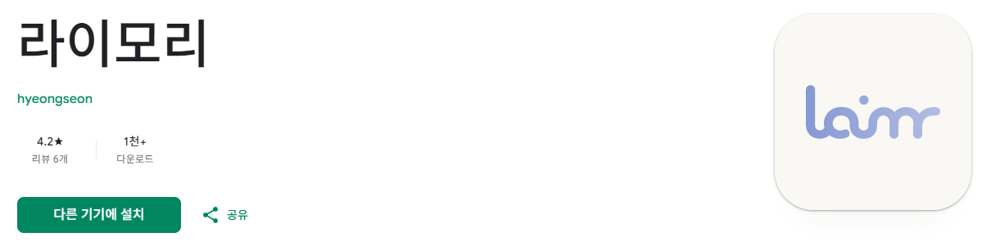
사용자의 모바일 기기속 정보(위치, 사진, 캘린더, 알림)를 모아 AI가 정리해 타임라인 형식의 일기로 만들어주는 안드로이드 애플리케이션입니다.
제가 백엔드 개발과 인프라 설계, 구축을 맡았습니다.
일기 작성이 주는 장점이 많지만 그것을 지속하기에는 인지적, 시간적 비용이 많이 들어 지속하기 어렵다. 라는 문제를 찾아서 해결하고자 했습니다.
인지적, 시간적 비용이란 오늘 뭐했지? 에 대해 정보를 모으는 비용과 모은 정보를 정리하고 기록하는 비용입니다.
실행 화면
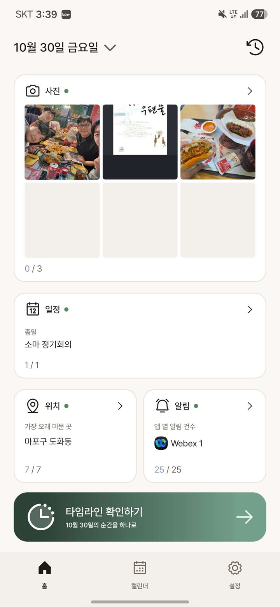
홈화면입니다. 어떤 정보가 수집되어있는지 확인할 수 있고 정보를 선택, 제외할 수 있습니다.
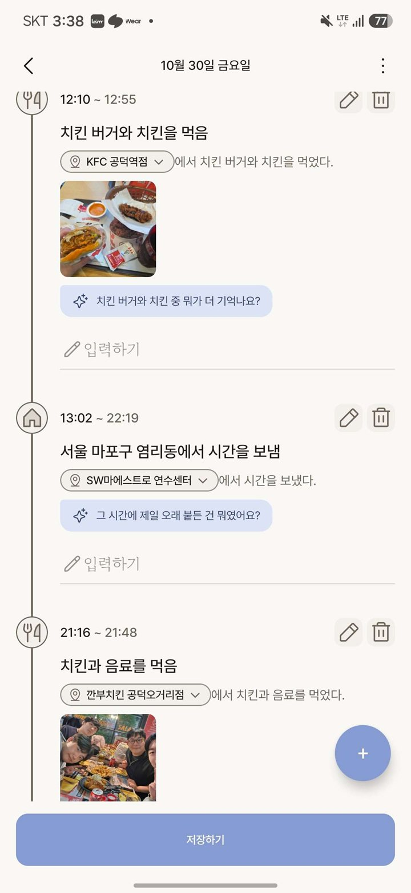
타임라인입니다. AI의 결과물로 각 정보들의 맥락을 파악하고 모아서 이벤트의 형태로 만들어줍니다. 수정과 메모 입력이 가능합니다.
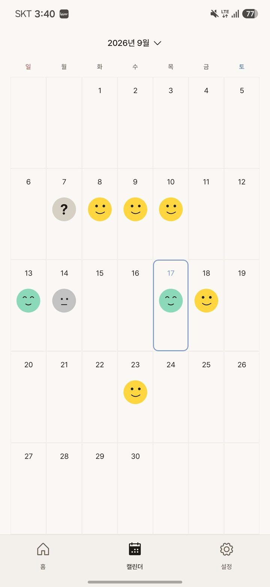
지난 기록들을 캘린더뷰로 볼 수 있습니다
사용 기술
Java, Spring Boot, MySQL, Redis, File Beat, Elastic Search, Kibana, Grafana, Prometheus, Tempo, AWS
인프라 구조
제한된 비용 안에서 API 서버의 가용성을 먼저 확보하고, 단일 서버로 둔 데이터 계층은 백업과 경보로 보완하는 방향으로 설계했습니다.
- API 서버 이중화: API 서버를 2대로 이중화해 한 대에 장애가 발생해도 나머지 한 대로 버틸 수 있도록 했고, 두 서버는 서로 다른 가용 영역(AZ)에 배치했습니다. 또한 무중단 배포를 위해 롤링 배포를 사용했습니다.
- 단일 장애 지점: Redis와 MySQL은 단일 서버라 단일 장애 지점이지만, 서버 비용으로 인해 감수했습니다. 대신 MySQL은 백업과 경보 체계를 구축해 빠르게 복구할 수 있도록 했습니다.
- 사진: 앱이 presigned URL로 S3에 직접 업로드하고 CloudFront로 제공해 API 서버의 부담을 줄였습니다.
- AI와 비밀값: AI 서버는 Bedrock AgentCore로 호출하고, 비식별화에 쓰는 HMAC 키는 Secrets Manager에서 관리합니다.
- 운영 도구: 로그 서버와 모니터링 서버는 공인 IP와 공개 경로 없이 사설 서브넷에서 운영합니다. 보안을 위해 SSM 포트 포워딩으로만 접속합니다.
- CI/CD: GitHub Actions가 OIDC로 AWS 권한을 받아 이미지를 ECR에 올리고, SSM으로 환경별 서버에 배포합니다.
문제 해결
1. 긴 AI 추론 시간을 위한 백엔드 구조
구조 설계
설계 배경
타임라인 생성은 사용자의 하루치 위치, 사진, 일정 데이터를 AI가 분석하는 작업으로, 운영 기준 평균 35초가 소요됩니다. 이를 일반적인 요청-응답 방식으로 처리하면 다음 두 가지 문제가 발생합니다.
- 사용자 대기: 생성이 끝날 때까지 응답을 받지 못해, 사용자가 진행 상황을 모른 채 기다려야 합니다. 그사이 네트워크가 끊기거나 앱이 종료되면 응답을 받을 수 없습니다.
- 서버 부하: 요청 하나가 AI 처리가 끝날 때까지 서버 스레드를 점유합니다. 생성 요청이 몰리면 가용 스레드가 줄어 AI와 무관한 다른 API까지 느려질 수 있습니다.
구조
요청 접수와 AI 생성을 분리한 비동기 구조로 설계했습니다. 흐름은 다음 세 단계로 나뉩니다.
- 생성 요청: 앱이 사진을 S3에 직접 업로드한 뒤 API 서버에 생성을 요청합니다. API 서버는 원본 데이터를 저장하고 AI 서버에 생성을 요청한 다음, 접수가 확인되면 곧바로 작업 ID를 응답합니다.
- AI 비동기 처리: AI 서버가 API 서버에서 입력 데이터를 조회해 타임라인을 생성하고, 결과를 다시 API 서버로 전달합니다. 그동안 앱은 작업 ID로 진행 상태를 주기적으로 폴링합니다.
- 결과 확인: 저장과 완료 통보가 끝나면 API 서버가 앱에 푸시 알림을 보내고, 앱은 작업 상태를 조회해 완성된 타임라인을 받습니다.
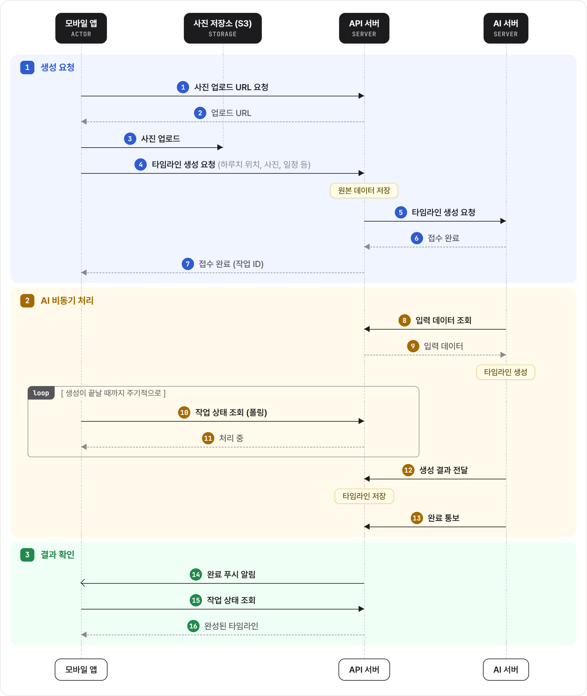
장점
사용자는 접수 응답을 바로 받고 생성을 기다리는 동안 앱을 계속 사용할 수 있으며, 폴링 응답에 담긴 경과 시간으로 진행 상황도 확인할 수 있습니다.
앱을 종료했다가 다시 열어도 진행 중인 작업 목록을 조회해 이어서 확인할 수 있고, 푸시 알림이 유실되더라도 폴링으로 결과를 받을 수 있습니다.
서버는 AI가 생성하는 동안 요청 스레드와 DB 트랜잭션을 점유하지 않고, 처리 중 상태 조회는 Redis만 읽어 반복 폴링의 부담도 작습니다.
에러 핸들링
설계 배경
크레딧은 타임라인을 생성할 때 사용하는 재화입니다. 생성 요청을 접수하는 시점에 차감하고, 차감 내역을 CHARGED 상태로 기록합니다. 이후 결과가 저장되면 CONSUMED로 확정하고, 생성이 실패하면 REFUNDED로 바꾸며 차감한 금액을 돌려줍니다.
AI가 생성에 실패했다고 알려 주면 서버가 크레딧을 환불하고 작업을 실패로 마무리할 수 있습니다. 반면 AI 서버 장애 등으로 결과도 실패 통보도 오지 않으면 서버가 작업 종료를 알 수 없어 다음 문제가 발생합니다.
- 사용자 대기: 작업 결과가 확정되지 않아, 사용자가 실패 안내 없이 완료를 계속 기다리게 됩니다.
- 크레딧 미정산: 크레딧은 생성 요청 시점에 차감되므로, 결과가 오지 않으면 생성되지 않은 타임라인의 비용이 환불되지 않습니다.
구조
Redis의 TTL과 key 만료 알림을 이용해 응답 없는 작업을 감지하고 자동으로 실패 처리합니다.
- 타이머 시작: 크레딧 차감 후 3분 TTL의 유실 타이머 key를 Redis에 저장합니다.
- 정상 종료 시 삭제: 결과가 저장되거나 AI의 실패 통보로 환불이 끝나면 타이머를 삭제합니다.
- 유실 감지: 타이머가 삭제되지 않은 채 3분이 지나면 Redis가 key 만료 알림을 보내고, 구독 중인 모든 서버가 이를 수신합니다.
- 중복 처리 방지: Redis SET NX로 처리 서버를 한 대로 제한합니다.
- 실패 처리: 크레딧이 아직 CHARGED인 경우에 환불하고, 작업을 실패 상태로 기록한 뒤 사용자에게 실패 푸시를 보냅니다.
장점
유실된 작업의 비용을 운영자 개입 없이 사용자에게 즉시 자동으로 돌려줄 수 있습니다. 또한 진행 중인 작업을 주기적으로 조회하는 스케줄러 없이 만료 이벤트가 발생한 작업만 처리하므로, 감지에 드는 부하도 적습니다.
2. AI 서버와 DB 서버의 결합 끊기
설계 배경
초기에는 AI 서버가 API 서버와 동일한 데이터베이스에 직접 접근하여 생활 데이터를 조회하고 생성 결과를 저장했습니다. 별도의 데이터 전달 API가 필요하지 않다는 장점이 있었지만, 다음과 같은 문제가 있었습니다.
스키마 결합: AI 서버가 테이블 구조를 알아야 했으므로, 데이터베이스 스키마가 변경될 때마다 AI 서버의 로직도 함께 변경해야 했습니다.
책임 분산: 입력 데이터 검증, 사용자 소유권 확인 및 트랜잭션 처리 책임이 두 서버에 분산되어 있었습니다.
구조
AI 서버는 생활 데이터 분석과 타임라인 생성만 담당하고, 데이터 접근과 저장은 API 서버가 관리하도록 구조를 변경했습니다. 그리고 데이터는 API 서버에 요청을 보내 처리하도록 했습니다.
전체 처리 흐름은 다음과 같습니다.
- 작업 전달: API 서버가 전처리를 마친 생활 데이터를 작업별 source Item 공간에 저장하고, AI 서버에는 taskId와 작업 전용 토큰을 전달합니다.
- 입력 조회: AI 서버가 전달받은 정보를 이용해 현재 작업의 source Item만 서버 간 API로 조회합니다.
- 결과 전달: AI 서버가 생성한 결과를 서버 간 API를 통해 API 서버로 전달합니다.
- 검증 및 저장: API 서버가 데이터를 검증하고, 통과한 Event, Item 및 원본 데이터 연결 정보를 저장합니다.
- 완료 통보: AI 서버가 Callback으로 작업 완료를 API 서버에 알립니다.
서버 간 통신 보안을 위해 작업 전용 토큰은 입력 조회와 결과 저장 단계가 끝날 때마다 새로운 토큰으로 교체합니다.
장점
데이터베이스 구조가 바뀌더라도 AI 서버는 영향을 받지 않고, 입력 데이터 검증과 사용자 소유권 확인, 트랜잭션 처리는 API 서버가 일괄 담당하게 되었습니다. AI 서버는 데이터 관리 로직 없이 생활 데이터 분석과 타임라인 생성에만 집중할 수 있습니다. 또한 작업 전용 토큰으로 현재 작업의 데이터에만 접근하므로, 데이터베이스 전체에 접근하던 기존 구조보다 노출 범위가 줄었습니다.
3. 개인정보 보호를 위한 사용자 데이터 비식별화
설계 배경
라이모리는 사진, 위치, 일정, 건강 정보 및 메모 등 사용자의 생활을 나타내는 데이터를 장기간 저장합니다. 이러한 데이터가 동일한 사용자 식별자로 연결될 경우 이동 경로, 생활 습관 및 인간관계 등 민감한 정보를 추론할 수 있습니다. 이에 사용자와 데이터 소유자를 분리할 필요가 있었습니다.
구조
무작위 Subject ID와 HMAC 기반 매핑 구조를 적용하여 인증 영역과 콘텐츠 영역의 식별자를 분리했습니다. 또한 비밀 키값과 매핑 테이블을 나눠 데이터베이스나 비밀키 중 하나만 유출되어서는 사용자와 생활 데이터를 바로 연결하기 어렵도록 구성했습니다.
| 구분 | 식별자 | 사용 영역 |
|---|---|---|
| 인증 영역 | 기존 userId | 로그인, Access Token, Refresh Token |
| 콘텐츠 영역 | Subject ID (UUIDv4) | 타임라인, AI 입력 staging, User Memory, FCM 푸시 등록, Redis 작업 상태, S3 사진 저장 |
Subject ID 조회 흐름: userId → HMAC-SHA-256 조회 키 생성 → 매핑 테이블 조회 → Subject ID 획득 → 콘텐츠 접근
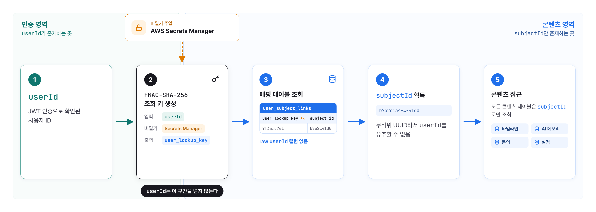
조회 키는 userId를 비밀키로 HMAC-SHA-256 변환한 값입니다. userId는 순서대로 발급되는 번호라 일반 해시를 쓰면 모든 번호를 대입해 원래 값을 찾아낼 수 있기 때문에, 비밀키 없이는 같은 값을 만들 수 없도록 했습니다. 매핑 테이블에는 원본 userId 없이 조회 키, Subject ID, 키 버전만 저장하고, 비밀키는 AWS Secrets Manager에서 따로 관리합니다.
장점
인증 정보와 실제 생활 데이터가 같은 식별자로 직접 연결되지 않습니다. 데이터베이스만 유출되면 비밀키가 없어 특정 userId에 대응하는 조회 키를 계산하기 어렵고, 비밀키만 유출되면 매핑 테이블과 콘텐츠 데이터가 없어 사용자와 생활 데이터를 연결하기 어렵습니다. 또한 비밀키 버전을 함께 관리하므로, 비밀키를 교체해도 Subject ID와 콘텐츠 데이터는 바뀌지 않습니다.
KPI를 통한 개선
1. 설정한 KPI
Laimory의 핵심 가치는 사용자가 직접 기록하지 않아도 AI가 생활 데이터로 하루를 정리해 주는 것입니다. 따라서 가입자 수나 생성 건수보다, 사용자가 이 가치를 실제로 경험하고 계속 사용하는지를 확인하는 데 중점을 두었습니다. 이를 세 가지 질문으로 나누고, 각 질문에 답할 수 있는 지표를 KPI로 설정했습니다. 또한 자체적인 대시보드를 제작하고 BigQuery로 내보낸 GA4 데이터를 SQL로 집계하여 분석과 수정이 용이하도록 했습니다.
타임라인은 권한 허용과 데이터 수집을 거쳐 AI 생성까지 끝나야 볼 수 있으므로, 첫 결과를 보기 전에 이탈할 가능성이 큽니다. 이에 사용자가 가입부터 첫 타임라인 확인까지 걸린 시간을 첫 가치까지 걸린 시간으로 측정합니다. 또한 [가입 → 권한 허용 → 타임라인 생성 → 타임라인 저장] 단계별 전환율을 측정하여 이탈이 발생하는 구간을 파악합니다.
사용자가 AI 이벤트를 삭제하거나 수정했다는 것은 생성 결과가 실제 하루와 달랐다는 신호입니다. 설문보다 실제 행동에 가까운 지표로 판단하여, 생성된 AI 이벤트 중 삭제 또는 수정된 비율을 타임라인 품질 지표로 사용합니다.
AI는 이벤트별로 질문을 생성하고, 사용자는 이에 답하듯 메모를 남길 수 있습니다. 메모는 AI가 자동으로 정리해 주는 내용과 달리 사용자가 직접 남기는 기록입니다. 따라서 사용자가 손으로 기록하는 부담을 어느 정도 수용하는지 확인하기 위해 이벤트 중 메모가 작성된 비율을 지표로 사용합니다. 마지막으로 라이모리는 반복 사용이 전제되므로, 첫 사용 후 D1, D7 재방문 리텐션을 측정합니다.
2. KPI를 중심으로 한 개선 시도
KPI를 분석한 결과 가장 시급한 문제는 첫 가치 행동인 타임라인 생성을 하지 못하고 떠나는 사용자였습니다. 2026년 10월 16일부터 11월 1일까지 설치 후 가입한 381명 중 62.2%(237명)가 타임라인을 생성하지 않았고, 43.0%(164명)는 생성 없이 앱을 삭제했습니다. 이에 첫 타임라인 생성을 최우선 과제로 삼아 개선을 진행했습니다.
문제 원인: 콜드 스타트
Laimory는 생활 데이터가 쌓여야 타임라인을 만들 수 있는데, 위치와 알림은 앱 설치 후부터 수집됩니다. 따라서 새 사용자는 첫날 홈 화면이 대부분 비어 있고, 내용 있는 타임라인을 만들려면 약 4시간을 기다려야 하는 콜드 스타트 문제가 있었습니다.실제로 생성 없이 앱을 삭제한 가입자의 75.0%(123/164)가 설치 후 하루 안에 삭제해, 많은 사용자가 기다리지 않고 떠나고 있었습니다. 온보딩을 마친 사용자 중에서도 53.5%(166/310)가 타임라인을 생성하지 않아 퍼널에서 이탈 규모가 가장 컸습니다.
해결 방향: 설치 전 데이터로 가입 직후 가치 제공
위치와 알림과 달리 사진과 일정은 설치 전 데이터도 바로 읽을 수 있다는 점에 주목했습니다. 이에 첫 진입 시 최근 한 달 중 직접 찍은 사진이 많은 날 3개를 추천하여, 사용자가 기다리지 않고 내용이 채워진 하루로 첫 타임라인을 만들 수 있도록 했습니다.
또한 처음 쓰는 사용자도 첫 생성까지 도달할 수 있도록 튜토리얼을 추가했습니다. 추천한 날짜에서 생성 버튼까지 차례로 안내합니다.
첫 가치 이후: 지속 사용을 위한 사용 경험 개선
첫 타임라인이 사용자의 하루와 다르거나 다시 돌아올 이유가 없으면 첫 경험의 효과가 이어지기 어려우므로, 후속 경험도 함께 개선했습니다.
생성 품질 또한 개선했습니다. 장소를 확정 지을 수 없는 경우 문장 전체를 수정하는 대신 후보에서 고를 수 있도록 모호한 장소는 후보지를 함께 제시하도록 했습니다. 사용자가 선택한 장소를 기억하여 다음 후보에 반영했습니다.
일일 리마인더 알림은 문구를 4개로 늘리고 기기 로컬 알림으로 전환하여 사용자가 원하는 시간대를 고를 수 있도록 했습니다.
3. 개선 후 성과
사진이 많은 날 추천과 튜토리얼을 반영한 결과, 첫 타임라인을 만드는 사용자는 가입 직후 바로 만들게 되었습니다. 가입 후 24시간 내 생성자 기준으로 생성까지 걸린 시간의 p75가 약 9.4시간에서 9분으로 줄어, 데이터가 쌓이기를 기다리는 시간이 크게 감소했습니다. 온보딩 완료 후 앱 삭제율 또한 낮게 나타났습니다. 하지만 생성률 자체는 개선을 얻어내지 못했습니다. 이것이 저희 가설의 한계라고 생각합니다.
| KPI | 개선 전 (10/26~11/1) | 개선 후 (11/2~11/5) | 변화 |
|---|---|---|---|
| 첫 타임라인까지 걸린 시간 p75 (24시간 내 생성자) | 9시간 26분 | 9분 | 약 9.4시간 단축 |
| 첫 타임라인까지 걸린 시간 p50 (24시간 내 생성자) | 52분 | 4분 | 48분 단축 |
| 가입 후 10분 내 생성률 | 11.6% (13/112) | 21.6% (19/88) | +10.0%p |
| 생성 후 24시간 내 타임라인 완료율 | 53.6% (15/28) | 64.0% (16/25) | 개선 추세 |
| 가입 후 생성률 | 32.1% (36/112) | 33.0% (31/94) | 뚜렷한 변화 없음 |
| 온보딩 완료 후 앱 삭제율 | 63.3% (57/90) | 43.3% (42/97) | -20.0%p |
ERD
Credit history: 크레딧 사용 상태를 CHARGED(차감), CONSUMED(소비), REFUNDED(환불)로 나눠 기록으로 남겼습니다. 차감액과 환불 사유를 함께 저장해, 비용 정책이 바뀌어도 차감한 금액 그대로 환불하고 문의 시 내역을 추적할 수 있습니다. 또한 TaskId를 함께 저장해 AI 실패로 인한 환불일 때 TaskId를 통한 추적이 가능하도록 했습니다.
BaseEntity: 공통 부모 엔티티에서 생성 시각, 수정 시각, 수정자를 JPA Auditing으로 자동 기록합니다.
Soft delete: Event와 DailyRecord는 deleted_at으로 삭제 처리합니다. 사용자 요청은 빠르게 끝내고, 연결된 항목과 S3 사진은 스케줄러가 배치로 정리합니다.
스케줄러: Soft delete된 기록의 연결 항목과 S3 사진, 만료된 토큰과 초안, 탈퇴한 사용자의 데이터를 주기적으로 배치 정리합니다. 서버 2대가 같은 데이터를 중복 처리하지 않도록 고정 워커 분배로 대상을 나누고, 대상 선점은 짧은 트랜잭션으로 끝낸 뒤 S3 삭제 같은 외부 작업은 트랜잭션 밖에서 처리해 DB를 오래 잡지 않게 했습니다.
주요 작업
공통 응답 구조와 예외 처리
앱이 모든 API 응답을 같은 방식으로 처리할 수 있도록 성공과 실패 모든 응답을 header(코드, 메시지)와 body로 구성했습니다. 성공은 코드 0, 실패는 에러 코드와 언어별 메시지를 담습니다.
클라이언트는 응답 코드가 음수면 실패로 보고, 서버가 보낸 message를 그대로 사용자에게 보여줍니다. 이런 서버드리븐한 구조로 앱을 업데이트하지 않아도 서버에서 새 예외를 추가하거나 안내 문구를 바꿀 수 있습니다.
#성공시
{
"header": {
"code": 0,
"message": ""
},
"body": {
~~
}
}#실패시
{
"header": {
"code": -1021,
"message": "크레딧이 부족해요."
},
"body": null
}ExceptionType 하나에서 실패별 공개 코드, HTTP 상태, 로그 레벨을 관리합니다.
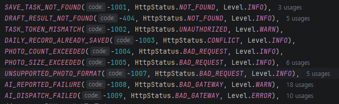
로깅 구조 (Filebeat, Elasticsearch, Kibana)
앱의 JSON 로그를 Filebeat가 수집해 Elasticsearch로 보내고, Kibana로 조회합니다. 로그는 환경과 날짜별 인덱스에 저장하고 89일 뒤 자동 삭제합니다.
요청마다 transaction ID를 발급해 로그에 남기고 응답 헤더로 전달합니다.
요청마다 한 줄의 로그에 경로, 상태, 응답 시간, 에러 코드, 예외 유형을 남겨 문제를 빠르게 좁힐 수 있게 했습니다.
보안을 위해 인증 정보와 사생활 데이터가 담긴 요청 본문은 마스킹했습니다.
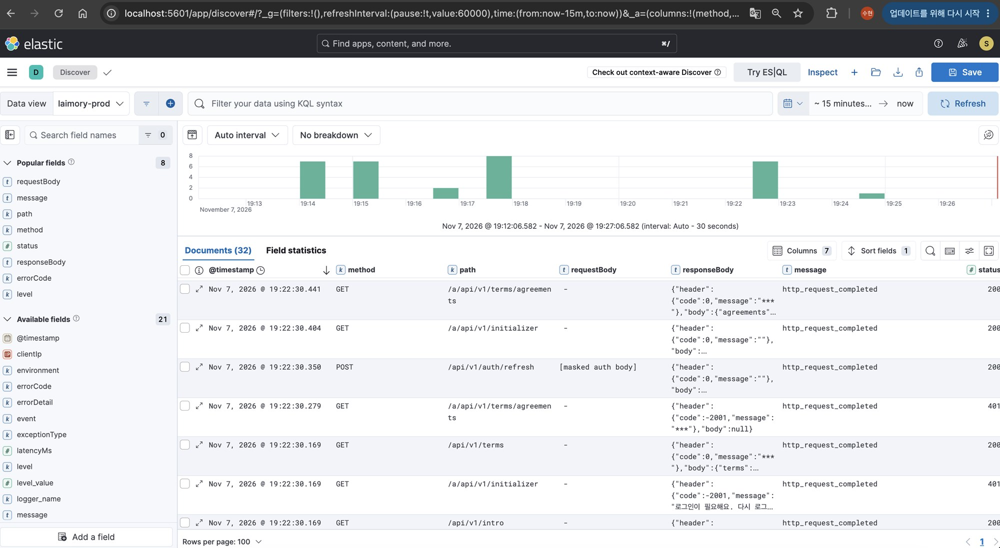
모니터링과 경보 알림
Prometheus로 지표를, Tempo로 트레이스를 수집하고 Grafana 대시보드 4개(Overview, JVM & Spring, Infrastructure, Logs)에서 함께 확인합니다.
30여 개의 규칙으로 서버 상태, TLS, 로그 파이프라인, 백업까지 감시하고 발생과 해소를 모두 Discord로 받습니다.
- 애플리케이션 경보: HTTP 5xx 비율, ERROR 로그, p95 지연, JVM 힙, DB 커넥션 풀을 감시합니다.
- 서비스 경보: AI 생성이 최근 5건 중 3건 이상 실패하거나, 정산되지 않은 크레딧이 남거나, 미처리 문의가 있으면 알립니다.
Geo API 비동기 호출과 서킷 브레이커
위치 데이터를 주소와 주변 장소로 바꾸기 위해 카카오 로컬 API를 사용합니다. 실제 하루 기록에는 고유 좌표가 19개 있었고, 좌표마다 2번씩 호출해 요청 하나에 38번의 호출이 필요했습니다. 좌표를 하나씩 순차로 조회하면 요청 하나에 38번의 호출을 차례로 기다려야 해 응답이 느려지므로, WebClient로 좌표를 최대 20개까지 병렬 조회했습니다. 또한 외부 API의 지연이나 장애가 서버 전체로 번지지 않도록 커넥션 풀, 시간 제한, 재시도(최대 2회), 서킷 브레이커를 적용했습니다. 서킷 브레이커는 최근 20회 호출 중 실패율이 50%를 넘으면 30초 동안 호출을 차단하며, 카카오 쪽 실패만 집계해 우리 서버가 혼잡하다고 회로가 열리지 않게 했습니다.
이 값들을 감으로 정하지 않기 위해, 실제 API를 호출하지 않는 테스트 환경을 만들고 부하 테스트로 병목을 찾아 값을 정했습니다.
- Mock 서버: WireMock으로 카카오 로컬 API 두 경로를 그대로 흉내 내는 시뮬레이터를 만들었습니다. 실제 API 키나 사용자 좌표 없이도 서버의 커넥션 풀, 타임아웃, 재시도, 서킷 브레이커 경로를 실제 HTTP로 통과시킬 수 있습니다. 가짜 AI 서버 경로도 추가해 AI 접수와 콜백 흐름까지 테스트했습니다.
- k6 부하 테스트: 실제 하루 기록 분포(일정 2, 알림 41, 체류·이동 14)로 요청을 만들고, 모든 가상 사용자가 같은 시각에 동시에 요청하도록 맞춰 순간 몰림을 재현했습니다. 지오코딩이 없는 접수 경로와 지오코딩 경로를 나눠 측정해, 병목 지점을 찾고 적절한 WebClient의 병렬 조회 개수와 connection pool 값을 정했습니다.
2. MIRADOR
Unity를 이용해 개발한 2D 쿼터뷰 액션게임입니다.
사용 기술
Unity, C#
프로젝트 소개 및 동기
- 아트 1명, 프로그래밍 1명으로 제가 프로그래밍을 담당해 개발한 2D 쿼터뷰 하드코어 액션 게임입니다.
- 당시 '다크소울', '몬스터 헌터' 등 높은 난이도를 요구하는 장르의 시장 수요를 타겟팅했습니다.
2D 환경에서도 특유의 높은 난이도를 구현하기 위해, 발도/납도에 따른 극단적인 이동속도 변화를
핵심 시스템으로 설계하여 전략적인 전투를 유도했습니다. - 나아가 완성된 결과물을 통해, 저희가 설계한 게임이 실제 시장에서 상업적 가치와 유저의 선택을 받을 수 있는지 검증해 보고자 했습니다.
프로젝트 내용
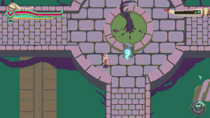
- 핵심 시스템인 발도, 납도 시스템입니다. 발도 시 이동속도를 낮추는 것으로 난이도를 올렸습니다.
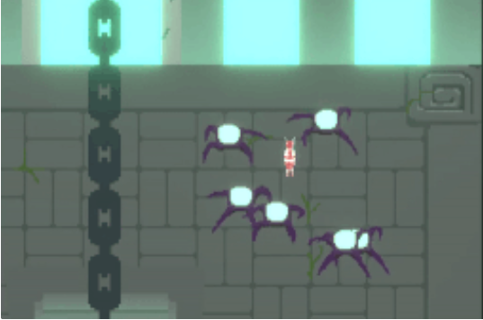
- 몬스터 AI에 고민을 많이 했습니다. 다수의 적이 몰려올 때 대처하기 어려운 느낌을 주기 위해
플레이어 주위를 돌면서 다 같이 공격하는 몬스터 행동 패턴을 만들어서 2D 게임에 적용했습니다.
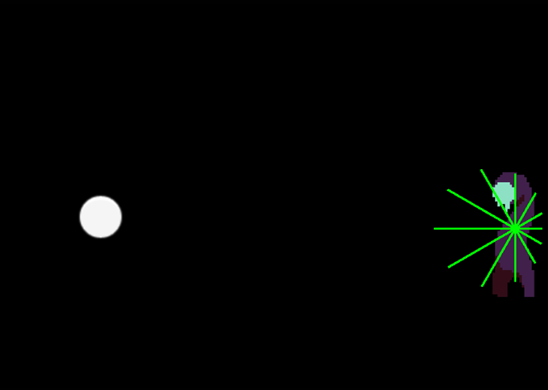
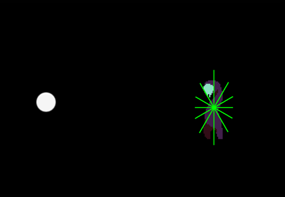
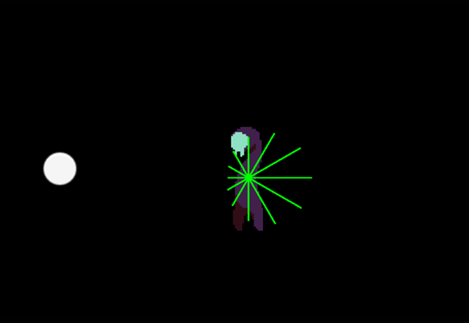
- 몬스터의 AI는 기계적인 느낌을 주지 않도록 몬스터 기준 12가지 방향으로 가중치를 두고 가중치가 가장 큰 방향으로 이동하도록 만들었습니다. 가중치는 몬스터부터 플레이어로 가는 벡터와 방향 벡터의 내적을 통해 구현했습니다.
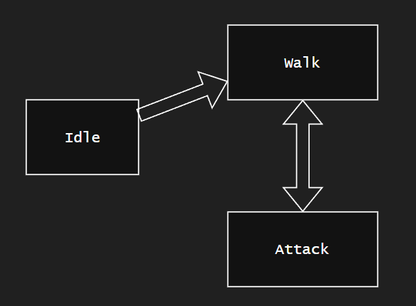
또한 Finite State Machine을 이용해 몬스터의 행동을 제어했습니다.
플레이어와의 거리와 공격 대기시간 등을 상태전이 조건으로 사용했습니다.
몬스터마다 특징이 달라 움직이지 않는 개체나 원거리 공격을 하는 개체도 있어 몬스터를 쉽게 추가하기 위해 확장성을 확보했습니다.
- 게임은 다수의 일반 몬스터 방을 지나 보스 몬스터 방을 클리어 하는 방식을 여러 번 반복하며 끝납니다.
결과
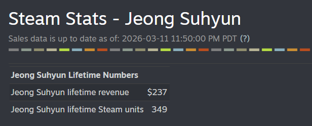
- 이렇게 스팀에 배포한 게임은 349개 팔렸고 총 237달러의 수익을 냈습니다.
- 스팀이라는 플랫폼 특성상 할인이 가장 큰 마케팅 요소라고 생각해서 초기 생각한 금액보다 더 큰 금액인 2달러를 책정한 뒤 거의 상시로 할인해 두는 전략을 택했습니다.
- 기획부터 배포까지 하나의 큰 프로세스를 경험하면서 단순히 기능을 개발하는 게 전부가 아니라고
느꼈습니다. 개발자는 좋다고 생각했으나 유저에겐 부정적인 경험을 주는 경우도 많아서 개발 후
많은 유저 피드백과 QA 기간이 중요하다고 느꼈습니다. - steam works partner 등록, steam 상점에 홍보하기 위해 올려놓는 그림 리소스(상점 배너, 아이콘,
도전 과제 아이콘) 등 개발 외적인 요소들에도 많은 시간과 돈이 쓰인다는 것을 알게 되었습니다. 한번 겪어보았으니, 다음에 배포할 프로젝트 기획시에는 비지니스 처리를 위해 계획에 여유를 두어야겠다고 생각했습니다.
게임개발 이외에도 고등학교와 대학교 1학년에 개발한 게임들을 모아두었습니다.